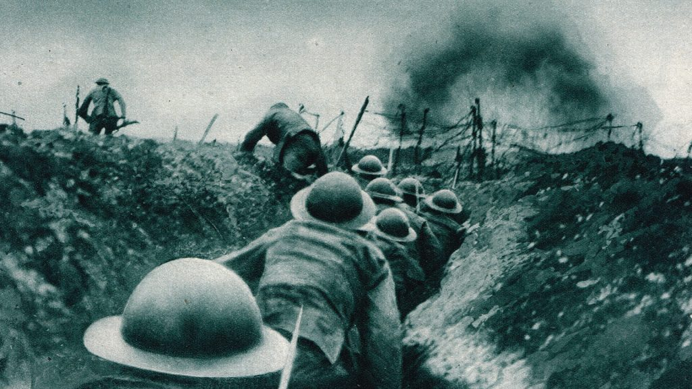

Case Studies
Case Study: World War II Leadership - Dwight D. Eisenhower
Operation Overlord (D-Day):
- One of Eisenhower's most remarkable achievements was the planning and execution of Operation Overlord, the Allied invasion of Normandy on June 6, 1944.
- The original date for the operation was set for June 5, 1944, but due to unfavorable weather, Eisenhower made the difficult decision to postpone it by 24 hours, displaying his situational/contingency leadership style.
- The successful D-Day invasion marked a turning point in the war and ultimately led to the defeat of Nazi Germany.
Leadership Traits and Actions:
- Emotional Intelligence: His ability to manage his emotions and exhibit empathy towards his subordinates created a supportive environment during a highly demanding period.
- Empowering Leadership: Eisenhower believed in giving responsibility to competent commanders. He trusted their expertise and judgment which encouraged them to make decisions on the ground.
Coalition Building and Inclusivity:
- As the leader of an international coalition, Eisenhower had to navigate complex relationships between various nations and military leaders.
- His ability to resolve disputes among different personalities and national interests was instrumental in maintaining unity within the Allied forces.
Post-War Europe:
- After the war, Eisenhower played a key role in the reconstruction of Europe through the Marshall Plan, which provided economic assistance to war-torn nations contributing to Europe's recovery and stability.
Further Info
Check out a site that also explain historical leadership practices and strategies
Learn More